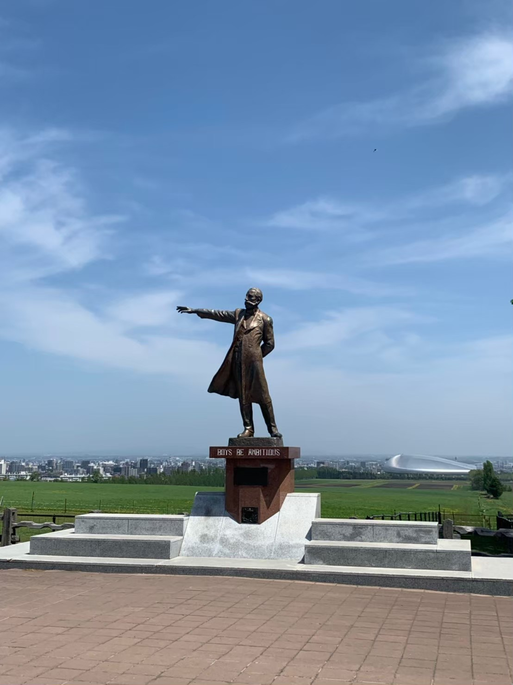
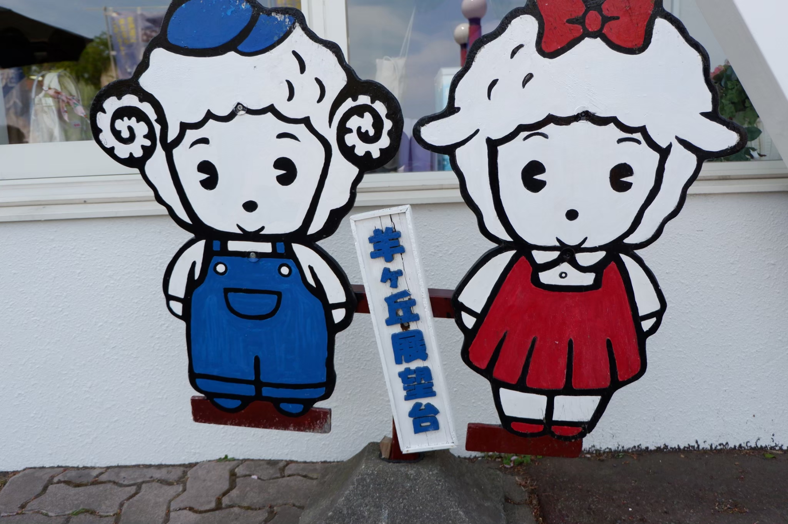
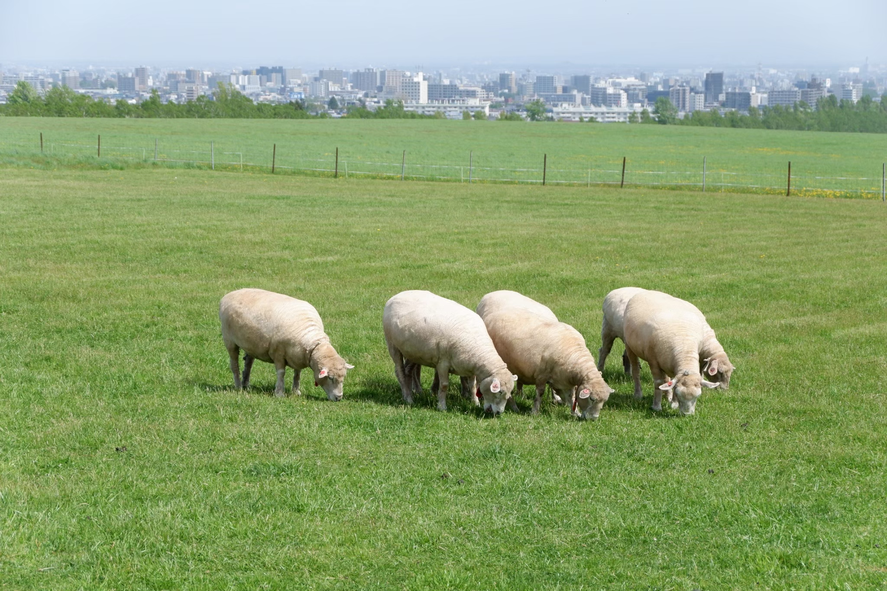
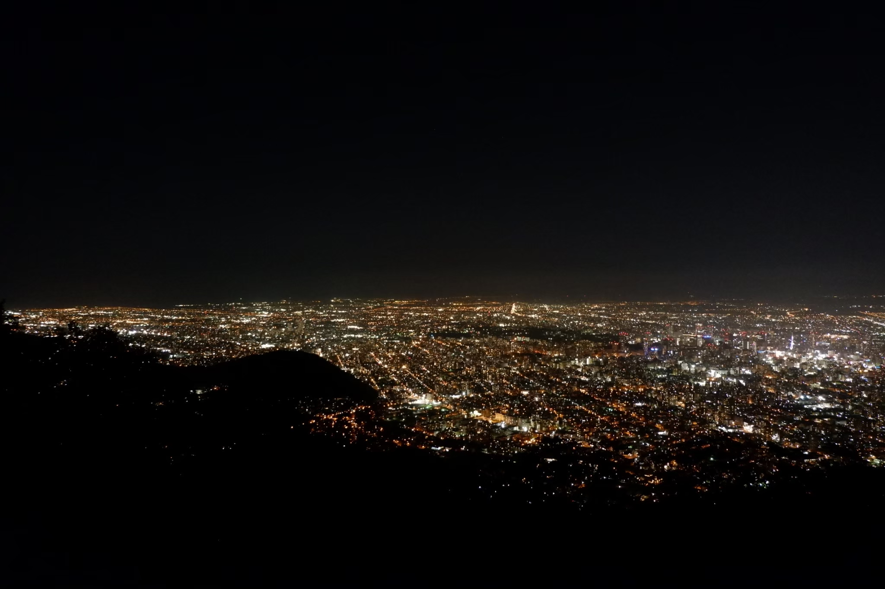
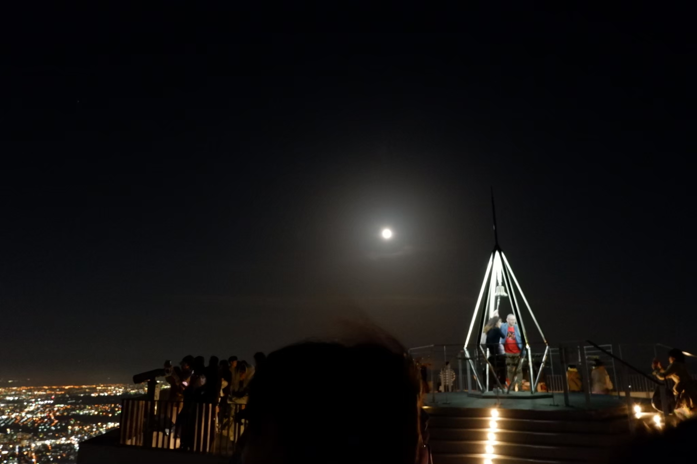

2018年5月、コンサート参加のために訪れた北海道・札幌で、友人と2泊3日で観光地を巡りました。
この時巡ったのは主に以下の3カ所でした。
これらは、初めて札幌旅行に行く方に超おすすめの定番スポットです！旅の記録と共に少しだけご紹介します。
クラーク博士の銅像。右の方に札幌ドームが映っています。
 羊ケ丘展望台という名前だけあって、羊たちの姿もありました。
黒ビールが呑みたい！という友人たっての希望でビール園に。

黒ビールとジンギスカンを堪能しました。

日本の新三大夜景にも認定されている藻岩山の夜景。（ちなみに「日本三大夜景」には函館山が選ばれています。）
最大の特徴は、オレンジがかった色！360度札幌市を一望できます。
空には綺麗な月も。絶景を堪能しました。
短い時間でもたくさんの思い出をくれた北海道。
また絶対に訪れたい地になりました。
紹介した観光地にまつわるクイズを出題！知っておくと自慢できるかも？
Q. クラーク博士の有名な言葉"Boys be ambitious"には続きがあると言われています。続く言葉とは何でしょう？